In this tutorial, you will configure and start using development container.
This codelab assumes you are deploying a development container on Jetstream2 virtual machine. Using another virtual machine would be similar but not explicitly covered.
Additionally, following are additional prerequisites to deploy development containers:
In this codelab, you will use a Jetstream2 virtual machine to deploy a development container.
Jetstream2 allows you to create virtual machine instances.
m3.medium should be sufficiently powerful.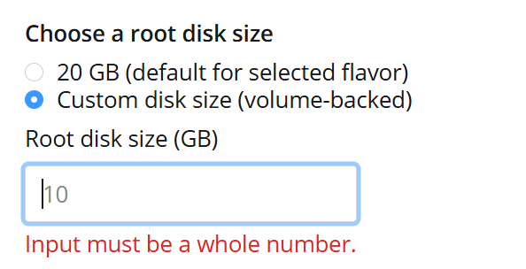
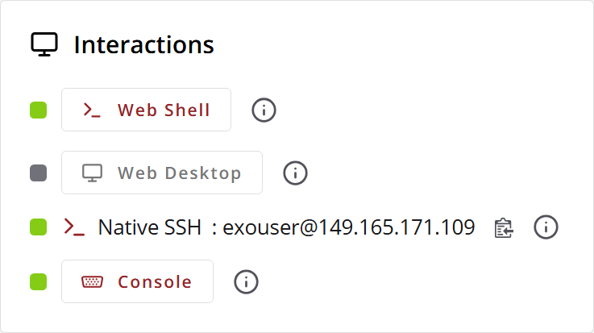
We will install VS Code in your VM, and connect to it from your local installation of VS Code.
curl -Lk 'https://code.visualstudio.com/sha/download?build=stable&os=cli-alpine-x64' --output vscode_cli.tar.gz
tar -xf vscode_cli.tar.gz
code executable in the same directory../code tunnel service install
sudo loginctl enable-linger $USER
Ctrl+Shift+p and start typing Remote-Tunnels: Connect to Tunnel...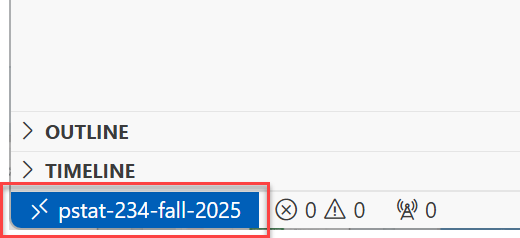
We will clone a repository with development container configuration files.
New WindowClone Repository button, then Clone from GitHub.UCSB-PSTAT-234/Fall2025.Select as Repository Destination.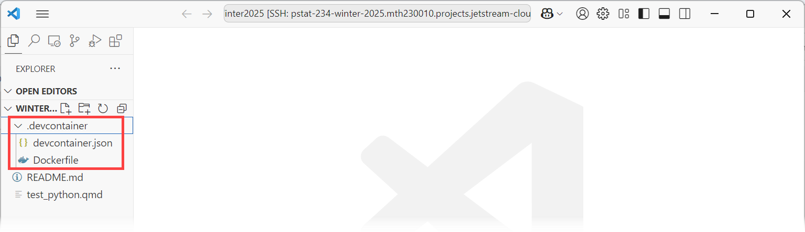
Now you are ready to start your development container!
Here are the essential commands in Command Palette (shortcut is Ctrl+Shift+p):
Dockerfile) or devcontainer.json changes.After your window connects to the running container, the status bar will change:
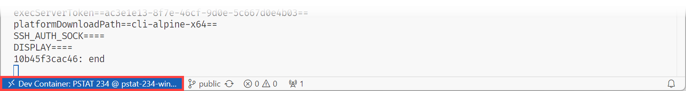
Now your VS Code window is connected to a remote development container!
Interactions in this window are performed on your virtual machine, inside the container.
When bottom left does not indicate Dev Container, you are on a remote host via a remote tunnel.
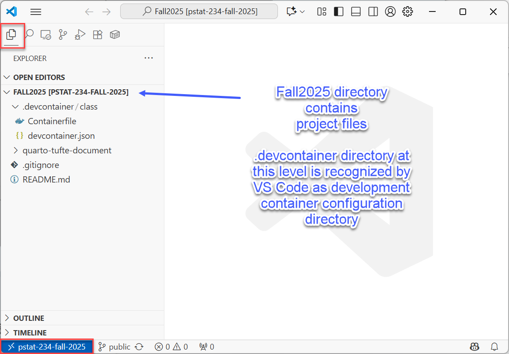
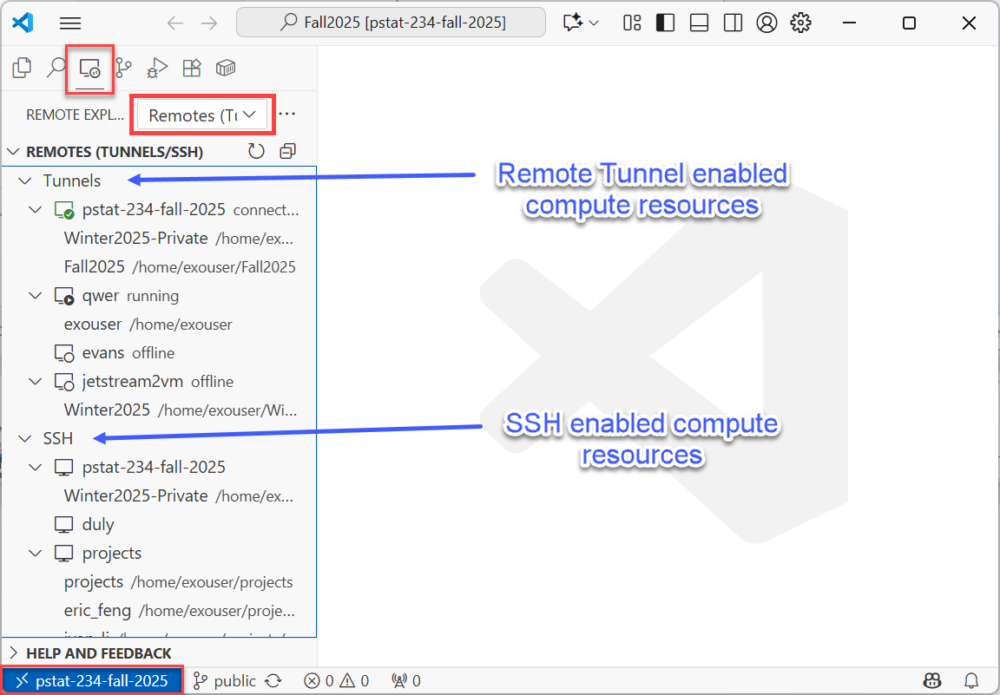
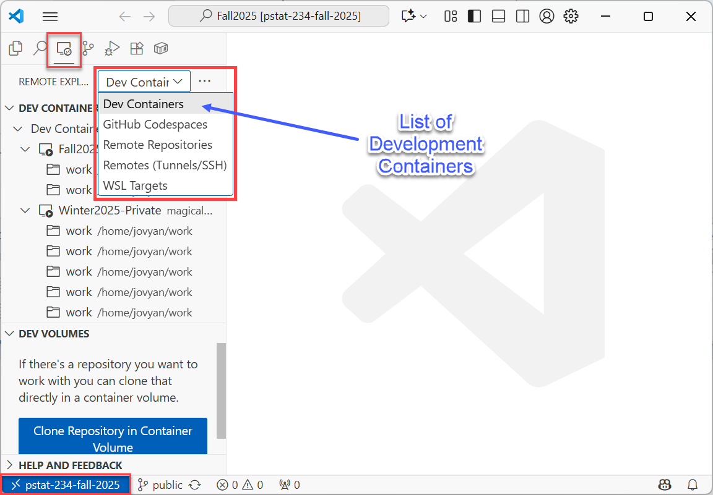
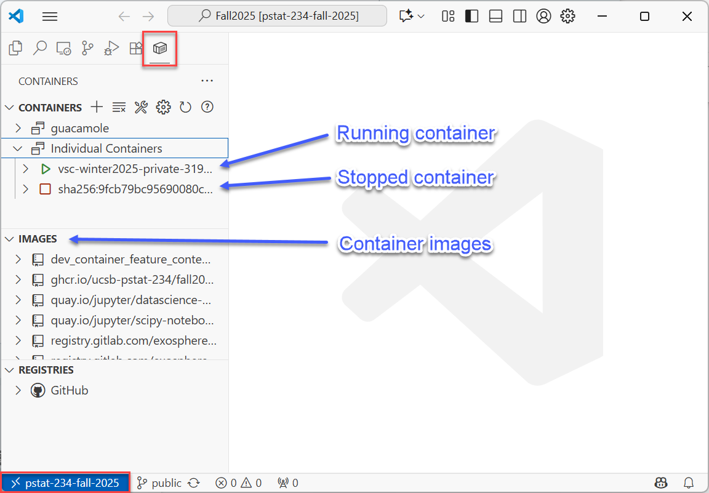
When bottom left shows Dev Container, you are inside a container.
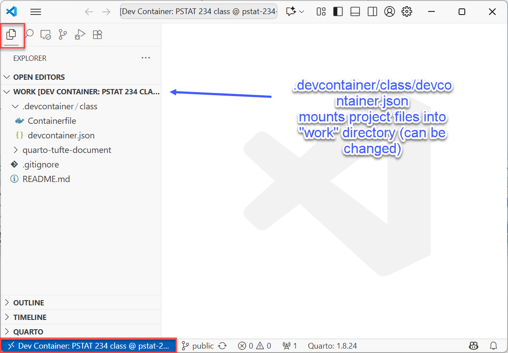
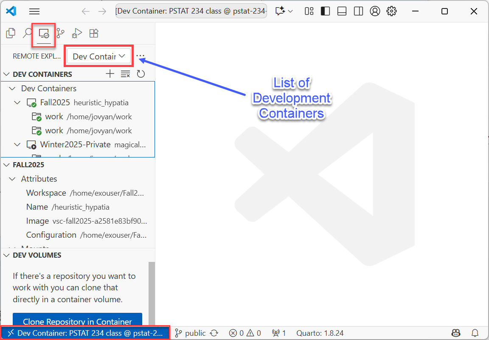
After you modify your devcontainers settings (rebuilding, adding/removing lines in Dockerfile, etc.), VS Code creates new container instances without cleaning up ones you were using.
This VS Code behavior results in
Eventually, you will need to clean up unused containers and images to reclain memory and disk storage space.
You can remove containers from VS Code. First, open Remote Explorer.
If you are inside a container, your window might look similar to the following (note bottom left):
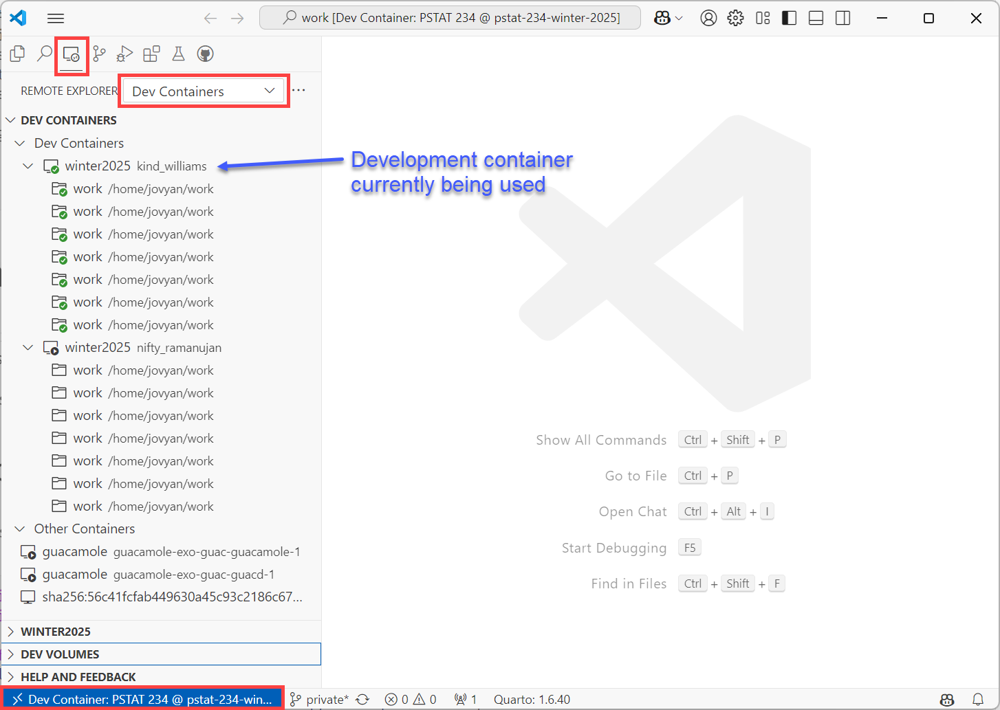
If you are on the VM host, but not inside the container, your window might look similar to the following (note bottom left):
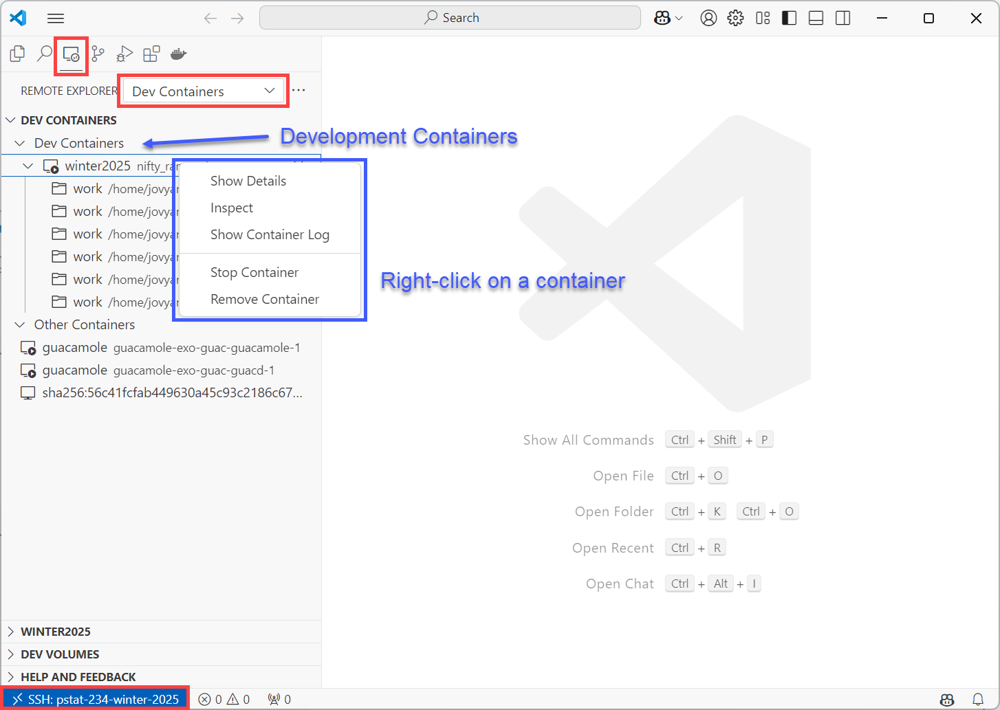
To remove containers, you can right click on a container and choose "Stop Container" first, then, "Remove Container"
After you remove unused running containers, you might also want to remove unused container images. These have been downloaded when VS Code built container images from your Dockerfile, so if needed, they will be downloaded again automatically. Hence, it is fine to remove all container images that can be deleted.
If you haven't installed already, install Docker extension on the host (note bottom left). Then, click on Prune icon to delete unused container images.
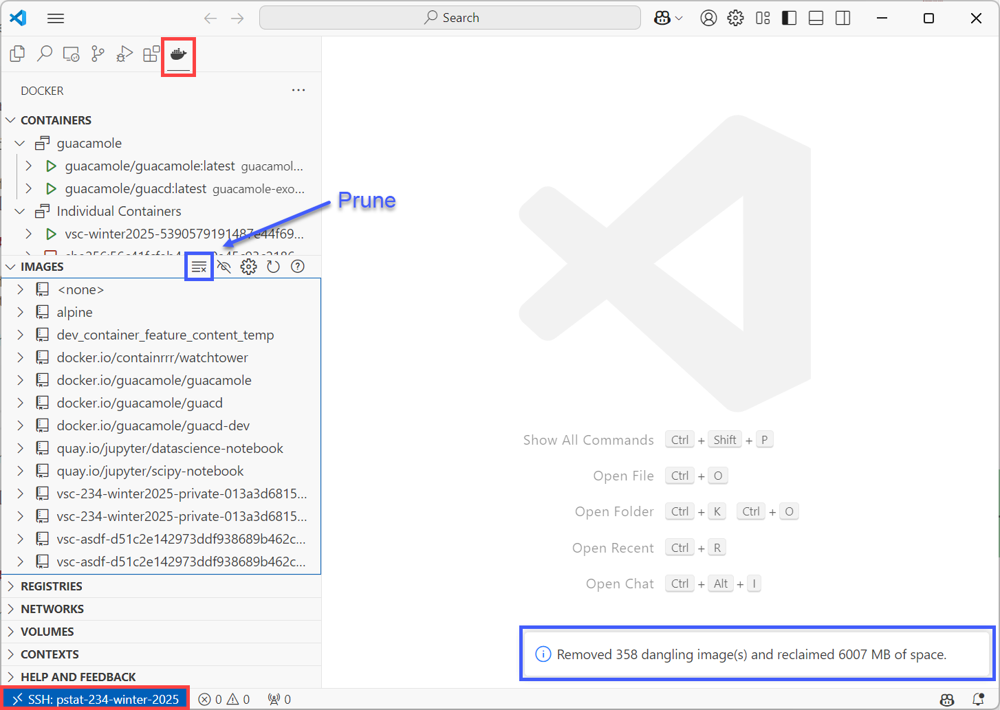
After pruning completes, you will see a notification.
You have completed the following steps: